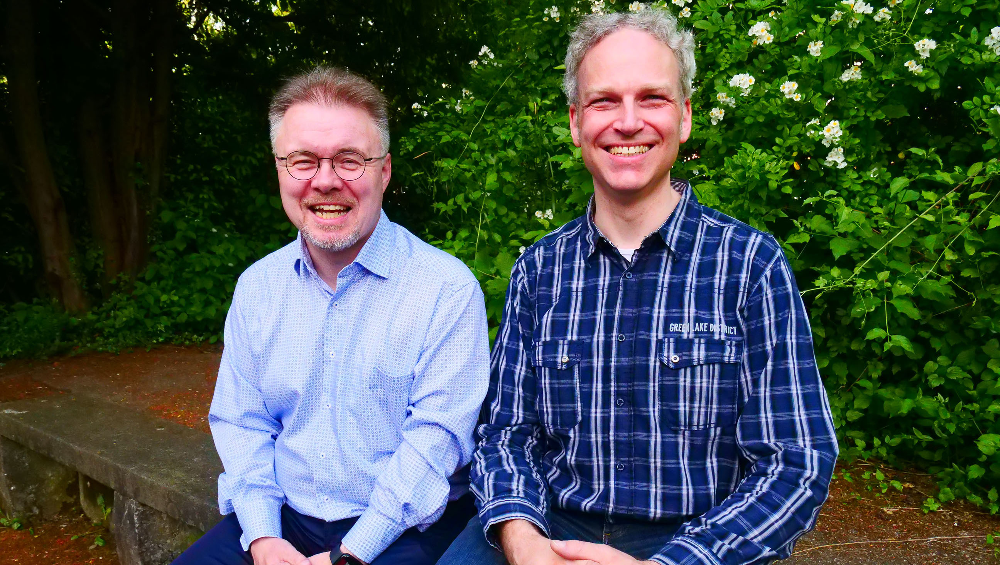

Liebe Schülerinnen und Schüler, sehr geehrte Eltern und Erziehungsberechtigte, verehrte am NCG interessierte Gäste unserer Schulhomepage,
wir freuen uns sehr, dass Sie den „Weg“ auf unsere Schulhomepage gefunden haben und möchten uns Ihnen auf diesem Weg als Schulleitung vorstellen. Seit Februar 2018 leiten wir beide das Nicolaus-Cusanus-Gymnasium, nachdem wir hier an der Schule schon viele Jahre auch als Lehrkräfte in verschiedenen Funktionen gearbeitet haben. Wir kennen also unsere Schulgemeinschaft gut und sind ihr eng verbunden.
Für die nächsten Jahre haben wir uns eine Reihe von Zielen gesetzt, die wir – gemeinsam mit unseren Koordinatorinnen und Koordinatoren, dem Lehrerkollegium und der weiteren Schulgemeinschaft – erreichen möchten.
Ganz oben steht natürlich die aktuell laufende Sanierung unseres Schulgebäudes, die sicherlich auch an der ein oder anderen Stelle eine Belastung darstellt. Trotz der Einschränkungen können wir aber den Ansprüchen, die wir als Kollegium an guten Unterricht stellen, sehr gerecht werden, denn auch in der Sanierungsphase stehen uns viele Fachräume für den naturwissenschaftlichen Unterricht oder auch für die Fächer Musik und Kunst zur Verfügung.
Und wenn auch ein großer Teil des Unterrichtes im Moment in Containerräume ausgelagert ist, ist die Ausstattung dieser Räume und auch der meisten anderen Unterrichtsräume sehr gut. Mittlerweile sind alle Unterrichtsräume an WLAN angebunden.
Auf diese Weise können wir digitale Medien gezielt für modernen Unterricht nutzen, weil wir über eine große Anzahl an schuleigenen iPads verfügen und viele Räume mit AppleTV-Einheiten ausgerüstet sind, was die Erstellung digitaler Tafelbilder, Präsentationen etc. erlaubt.
Die letzten Sätze weisen bereits auf ein zweites Ziel hin, das uns beiden wichtig ist, nämlich unsere Schülerinnen und Schüler mehr und mehr fit zu machen für eine Welt und Gesellschaft, die von einer sich noch immer rasant beschleunigenden Digitalisierung geprägt ist.
Nach der Sanierung wird unsere Schule gerade hier auf dem neuesten Stand der Technik sein. Zentrales Anliegen ist uns aber nicht eine Digitalisierung des Unterrichtes und der Schule nur um der Digitalisierung Willen, sondern der sinnvolle Einsatz dieser Medien in einem guten Fachunterricht.
Nicht zuletzt war das NCG in der Vergangenheit eine Schule mit einem breiten kulturellen Angebot, das nicht allein, aber doch in hohem Maße auch das gute Miteinander in der Schule und das große Gemeinschaftsgefühl aller NCG-lerinnen und NCG-ler auch über die Schulzeit hinaus enorm befördert hat.
Angesichts der aktuellen Baumaßnahmen und der Corona-Pandemie sind gerade hier viele Dinge nicht oder nur sehr begrenzt möglich. Mit der Generalsanierung der schuleigenen Aula, die parallel zur Sanierung der Schule abläuft, wird aber gerade der Grundstein dafür gelegt, dass wir hier zu alter Stärke zurückkehren.
Und gerade das soeben beschriebene Gemeinschaftsgefühl und der Einsatz dafür, dass das NCG ein für alle Beteiligten möglichst positiv erlebter Lern- und Lebensraum wird, sind uns wichtig.
Dabei können wir u. a. auf die Unterstützung unserer erfahrenen Koordinatorinnen und Koordinatoren Frau Doth und Frau Schürkämper für die Erprobungsstufe, Frau Peters und Herrn Haase für die Mittelstufe, Herrn Stracke und Frau Neumann für die Oberstufe und Herrn Spillmann für den Bereich der IT/Verwaltung zählen.